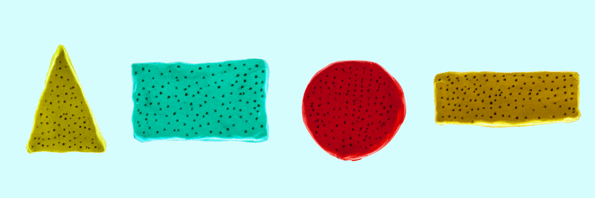
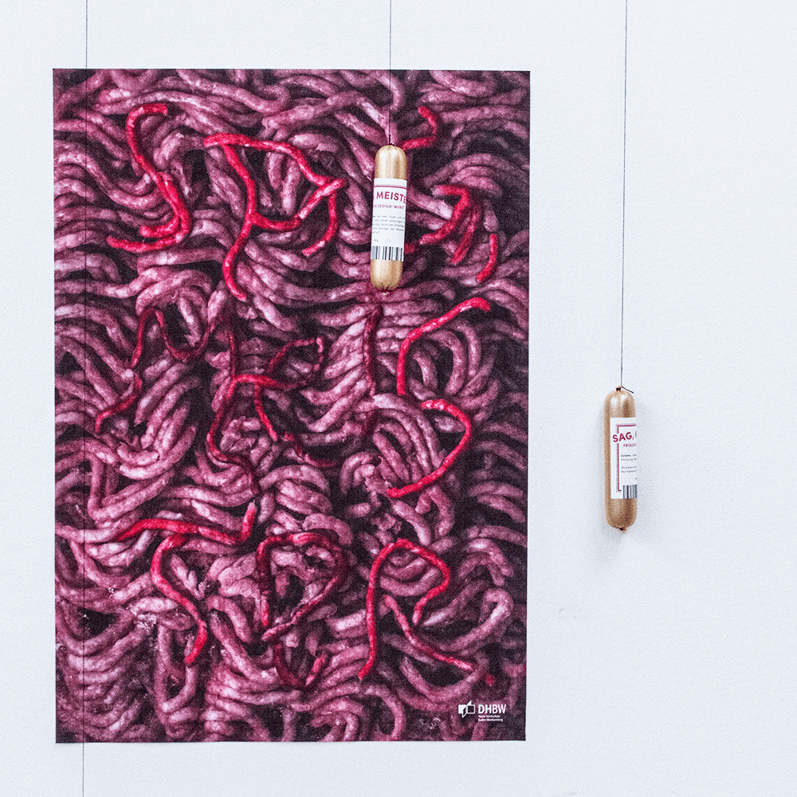
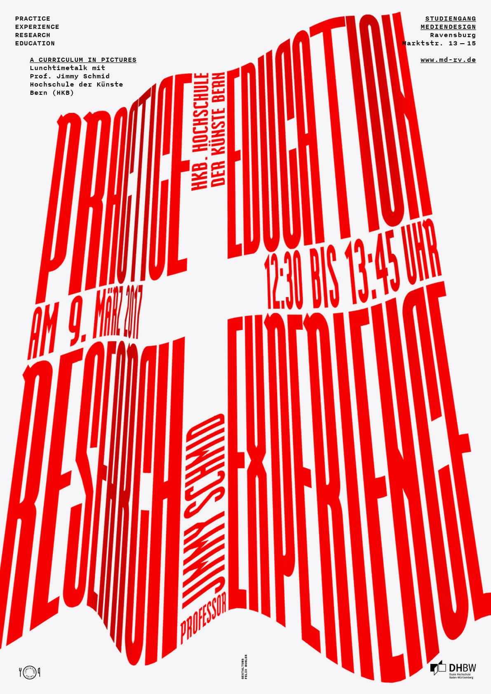
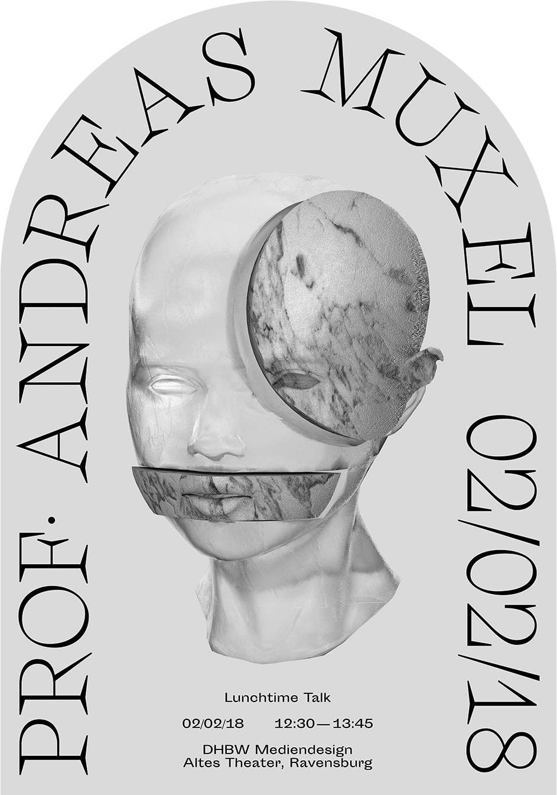
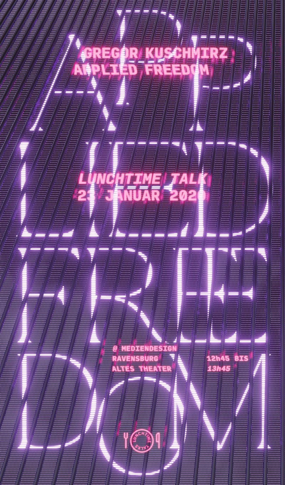
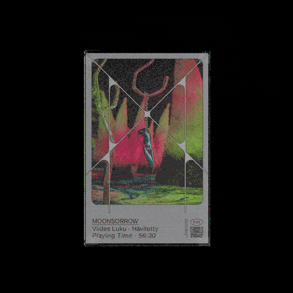

Good Die, My Friend
w/ Laura Klinke & Daniela Koltermann2016Motion • SoundIn the tragicomedy »Good Die My Friend« a supposedly trivial
competition between two neighbors comes to an escalation.
Disregarding their surroundings, both of them destroy, driven by
greed, their own habitat until a catastrophe is
inevitable.

Sag, Meister@ Mediendesign Ravensburg2015Interactive • Installation • GraphicSag, Meister is the result of a three-month preoccupation with
the famous designer Stefan Sagmeister. The project consists of 4
augmented posters for a fictional talk series that each display on
important aspect of Sagmeisters work or person.

A Curriculum In Pictures
Lunchtime TalkClient: Mediendesign Ravensburg2017GraphicPoster design for the lunchtime talk with Prof. Jimmy Schmid from
the Hochschule der Künste Bern (HKB).

Let's Get PhysicalLunchtime TalkClient: Mediendesign Ravensburg2018GraphicPoster design for the lunchtime talk with Prof. Andreas Muxel,
Augsburg/Köln.

Applied FreedomLunchtime TalkClient: Mediendesign Ravensburg2020Graphic • 3D • Motion • ARPoster design for the lunchtime talk with Gregor Kuschmirz. I
also created an Instagram face effect and animated
version.

V • Hävitetty2019Graphic • 3DUncommissioned artwork for Moonsorrow.Aufstiege2017SoundSoundtrack for the »Aufstiege« trailer, designed by Nicolas
Bernklau and Tobias Held.ECHO Werkschau2018SoundSoundtrack for the »Filmrolle« during the ECHO Werkschau at
Mediendesign Ravensburg.